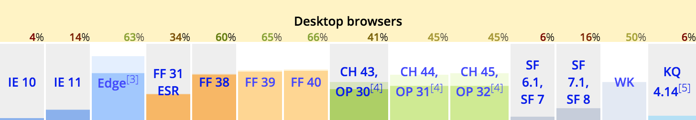
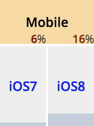
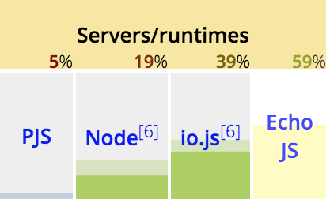
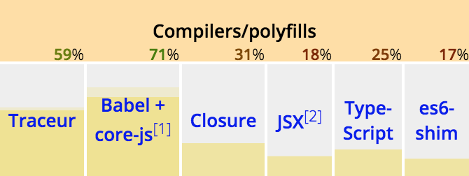

What is ECMAScript 6?
“ECMAScript 6 is the next version of the standard, code-named "ES.next". As of August 2014, ECMAScript 6 is already feature frozen, will be finished during 2015 and will start to go into the official publication process starting in March 2015 (to be finished in June 2015).”
So what is new?
Quite a lot, here are a few
- Arrow functions, Default values and Rest/Spread
- Classes
- Generators
- Modules
- Promises
- Template Strings
- And much more…
Arrow functions
Also know as "Fat Arrows"
// Expression bodies
var odds = evens.map(v => v + 1);
var nums = evens.map((v, i) => v + i);
var pairs = evens.map(v => ({even: v, odd: v + 1}));
// Statement bodies
nums.forEach(v => {
if (v % 5 === 0)
fives.push(v);
});
Default values
function f(x, y = 12) {
// y is 12 if not passed (or passed as undefined)
return x + y;
}
f(3) == 15
Rest and Spread
function f(x, ...y) {
// y is an Array
return x * y.length;
}
f(3, "hello", true) == 6
function f(x, y, z) {
return x + y + z;
}
// Pass each elem of array as argument
f(...[1, 2, 3]) == 6
Classes
class SkinnedMesh extends THREE.Mesh {
constructor(geometry, materials) {
super(geometry, materials);
this.idMatrix = SkinnedMesh.defaultMatrix();
this.bones = [];
this.boneMatrices = [];
//...
}
update(camera) {
//...
super.update();
}
static defaultMatrix() {
return new THREE.Matrix4();
}
}
Generators
function* fibonacci() {
var pre = 0, cur = 1;
while (true) {
var temp = pre;
pre = cur;
cur += temp;
yield cur;
}
}
for (var n of fibonacci()) {
// truncate the sequence at 1000
if (n > 1000)
break;
console.log(n);
}
Modules
// lib/math.js
export function sum(x, y) {
return x + y;
}
export var pi = 3.141593;
// app.js
import * as math from "lib/math";
alert("2π = " + math.sum(math.pi, math.pi));
// otherApp.js
import {sum, pi} from "lib/math";
alert("2π = " + sum(pi, pi));
The syntax
Additional features
export default and export *
// lib/mathplusplus.js
export * from "lib/math";
export var e = 2.71828182846;
export default function (x) {
return Math.exp(x);
}
// app.js
import exp, {pi, e} from "lib/mathplusplus";
alert("2π = " + exp(pi, e));
Promises
function timeout(duration = 0) {
return new Promise((resolve, reject) => {
setTimeout(resolve, duration);
})
}
var p = timeout(1000).then(() => {
return timeout(2000);
}).then(() => {
throw new Error("hmm");
}).catch(err => {
return Promise.all([timeout(100), timeout(200)]);
})
jQuery
Places we have seen this before
function asyncEvent() {
var dfd = new jQuery.Deferred();
// Resolve after a random interval
setTimeout(function () {
dfd.resolve("hurray");
}, Math.floor(400 + Math.random() * 2000));
// Return the Promise so caller can't change the Deferred
return dfd.promise();
}
// Attach a done, fail, and progress handler for the asyncEvent
$.when(asyncEvent()).then(
function (status) {
alert(status + ", things are going well");
},
function (status) {
alert(status + ", you fail this time");
},
function (status) {
$("body").append(status);
}
);
Template Strings
// Basic literal string creation
`In JavaScript '\n' is a line-feed.`
// Multiline strings
`In JavaScript this is
not legal.`
// String interpolation
var name = "Bob", time = "today";
`Hello ${name}, how are you ${time}?`
What about support?
Vanilla JS support is limited and varies widely




esnext


Currently supports 71% of ES6 standard
- Works well with pipeline tools such as Gulp and Grunt
- Shims and Polyfills are automatically added to the output
- Great 3rd party plugin support for JSX, Browserify and Flow

Traceur Compiler
Currently supports 59% of ES6 standard
- Requires runtime script for compiled code
- Suited well for Google ecosystem
- Cumbersome in pipelines

Currently supports 25% of ES6 standard
- Type safety!
- Works well with pipeline tools such as Gulp and Grunt
- Great IDE support Sublime Text, Visual Studio Code and WebStorm